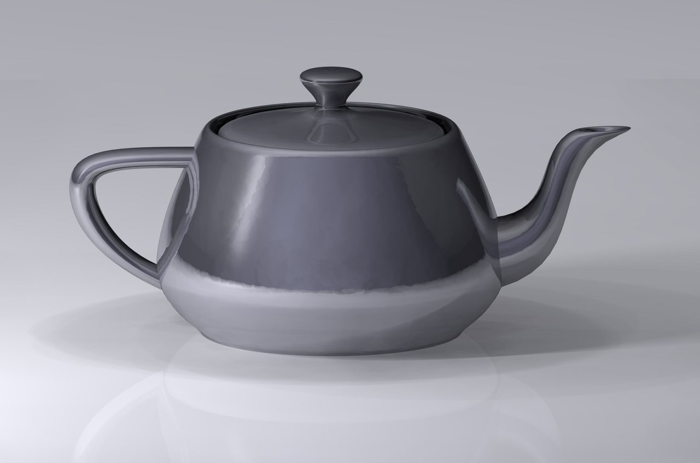
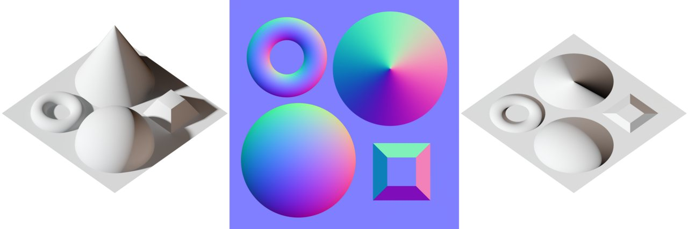

게임이 움직이고 그려지는 원리
1초에 60장 그리는 그림책
공책 귀퉁이에 그림을 조금씩 다르게 그리고 빠르게 넘기면 그림이 움직이는 것처럼 보입니다. 게임도 같은 원리입니다. 1초에 60장쯤 그림을 새로 그려서 보여 줍니다. 그림 한 장을 그릴 때마다 게임은 버튼이 눌렸는지 보고, 캐릭터를 조금 움직이고, 화면을 다시 그립니다. 이 장에서는 그 과정을 차례로 살펴봅니다.
- 게임이 1초에 수십 번 되풀이하는 세 가지 일을 말할 수 있습니다.
- 컴퓨터가 빠르든 느리든 캐릭터가 같은 속도로 움직이게 하는 방법을 설명할 수 있습니다.
- 물체끼리 부딪혔는지 알아내는 방법을 설명할 수 있습니다.
- 3D 물체가 화면의 그림이 되는 과정을 설명할 수 있습니다.
- 엔진이 해 주는 일, AI가 코드로 하는 일, 편집기에서 내가 손으로 할 일을 나눌 수 있습니다.
24.1게임은 아주 빨리 넘기는 그림책입니다#
공책 귀퉁이 그림은 한 장 한 장이 멈춰 있습니다. 게임 화면도 멈춘 그림을 빨리 넘겨 보여 주는 것입니다. 이 그림 한 장을 프레임(frame)이라고 합니다.
1초에 넘기는 장수는 FPS로 적습니다. 60FPS는 1초에 60장입니다.
공책과 다른 점이 하나 있습니다. 게임은 플레이어가 다음에 무엇을 누를지 모릅니다. 그래서 그림을 미리 그려 두지 못하고 장마다 그 자리에서 새로 그립니다. 한 장을 만들 때 하는 일은 늘 세 가지입니다.
- 입력: 플레이어가 무엇을 눌렀는지 읽습니다.
- 갱신: 게임 속 세상을 고칩니다. 캐릭터를 옮기고, 부딪혔는지 보고, 점수를 고칩니다.
- 그리기: 바뀐 대로 화면 한 장을 그립니다.
게임은 꺼질 때까지 이 세 가지를 되풀이합니다. 이 되풀이를 게임 루프(game loop)라고 합니다.
아래는 파이썬(Python)이라는 프로그래밍 언어로 적어 본 게임 루프입니다. 코드를 처음 본다면 초코딩 기초를 먼저 보세요.
while running:
dt = time_since_last_frame() # 지난 장부터 흐른 시간(초)
read_input() # ① 입력
update(dt) # ② 갱신
draw() # ③ 그리기# 뒤의 글은 사람이 읽으라고 적어 둔 메모입니다. 컴퓨터는 읽지 않습니다.
- 첫 줄은 "게임이 켜져 있는 동안 아래 네 줄을 되풀이하라"는 뜻입니다.
- 둘째 줄은 지난 장부터 흐른 시간을 재서
dt라는 이름으로 적어 둡니다. 이 값은 다음 절에서 씁니다. - 나머지 세 줄이 차례로 입력, 갱신, 그리기입니다.
update(dt)의 괄호는 잰 시간을 갱신에 건네준다는 뜻입니다.
그림 위쪽에서 공의 위치 x는 한 장마다 0.05씩 늘어납니다. 이렇게 조금씩 옮겨 그린 그림을 이어 보면 공이 굴러가 보입니다.
아래쪽의 ms(밀리초)는 1000분의 1초입니다. 1초에 60장을 넘기려면 한 장에 1000 ÷ 60 ≈ 16.7ms만 쓸 수 있습니다. ≈는 "거의 같다"는 기호입니다. 이 한도를 프레임 예산이라고 부릅니다.
그림의 게임은 입력에 1ms, 갱신에 6ms, 그리기에 7ms를 써서 2.7ms가 남았습니다. 합이 16.7ms를 넘으면 그 장이 늦게 넘어가서 화면이 끊겨 보입니다.
1장의 주방으로 치면 갱신은 요리사인 CPU가 맡습니다. 그리기는 주로 일꾼 수천 명인 GPU가 맡습니다.
게임 엔진: 엔진이 해 주는 것, 내가 정하는 것
이 루프를 게임마다 새로 만들지는 않습니다. 게임에 늘 필요한 기능을 모아 둔 도구를 씁니다. 이 도구가 게임 엔진입니다. 유니티(Unity), 언리얼(Unreal), 고도(Godot)가 널리 쓰입니다. 루프는 엔진이 돌리고, 만드는 사람은 갱신 때 할 일을 적어 넣습니다.
| 엔진이 해 주는 것 | 내가 정해서 AI에게 말해 줄 것 |
|---|---|
| 루프 돌리기, 버튼 읽기 | 어느 버튼이 무슨 동작인가 |
| 부딪힘 찾기, 떨어지고 튕기는 계산 | 무엇끼리 부딪히나, 얼마나 빨리 달리고 높이 뛰나 |
| 화면 그리기, 소리 틀기 | 어떤 그림과 소리를 어디에 쓰나 |
오른쪽 칸은 말해 주지 않으면 AI가 짐작으로 채웁니다. 왼쪽 칸을 AI가 처음부터 새로 짜려 하면 "엔진에 있는 기능을 써 줘"라고 말합니다.
AI 챗봇에 "게임 만들어 줘"라고만 하면 엔진 없이 브라우저에서 도는 게임을 줄 때가 많습니다. 이때는 루프도 AI가 직접 적습니다. 코드에서 requestAnimationFrame이 보이면 거기가 루프입니다. 어느 엔진으로 만들지는 요청 첫 줄에 적어 줍니다.
입력: 누른 순간과 누르고 있는 동안
점프 버튼을 톡 눌렀다 뗐다고 합시다. 손가락은 0.05초쯤 버튼 위에 있었습니다. 60FPS인 게임에서는 그 사이에 0.05 × 60 = 3장이 지나갑니다. 게임은 장마다 버튼을 살핍니다. 이때 물을 수 있는 질문이 둘입니다.
| 프레임 | 실제 버튼 | 누르고 있나? | 방금 눌렀나? |
|---|---|---|---|
| 1 | 떼어 있음 | 아니요 | 아니요 |
| 2 | 눌림 | 예 | 예 |
| 3 | 눌림 | 예 | 아니요 |
| 4 | 눌림 | 예 | 아니요 |
| 5 | 떼어 있음 | 아니요 | 아니요 |
"누르고 있나?"의 답은 세 번 "예"이고, "방금 눌렀나?"의 답은 한 번만 "예"입니다.
걷기처럼 누르는 동안 이어지는 동작은 "누르고 있나?"로 읽습니다. 점프처럼 한 번만 일어나야 하는 동작은 "방금 눌렀나?"로 읽습니다. 점프를 "누르고 있나?"로 읽으면 한 번 눌렀는데 점프 명령이 세 번 들어갑니다.
코드에서는 "방금 눌렀나?" 쪽 이름에 표시가 붙습니다. 고도에서는 just_pressed, 유니티에서는 흔히 Down입니다.
한 걸음 더분명히 눌렀는데 점프가 안 되면 어떻게 할까요?
발판 끝에서 뛰려고 했는데 캐릭터가 그냥 떨어질 때가 있습니다. 발이 발판을 벗어나고 한두 장 뒤에 버튼을 눌렀기 때문입니다. 60FPS에서 한 장은 0.017초쯤이라, 사람은 제때 눌렀다고 느낍니다.
그래서 발판 게임은 흔히 발판을 벗어난 뒤에도 0.1초쯤은 점프를 받아 줍니다. 이 봐주는 시간을 코요테 타임(coyote time)이라고 합니다. 만화 속 코요테가 절벽 밖에서 잠깐 떠 있는 장면에서 온 이름입니다.
반대로 땅에 닿기 조금 전에 누른 점프는 기억해 두었다가, 닿는 순간에 뛰게 합니다. 누른 것을 잠깐 기억해 주는 이 방법이 입력 버퍼(input buffer)입니다. AI에게 시킬 때도 두 이름을 그대로 말하면 됩니다.
24.2Δt: 빠른 컴퓨터에서도 같은 속도로#
같은 게임인데 친구의 좋은 컴퓨터에서만 캐릭터가 더 빨리 달린다면 이상한 일입니다. 코드 한 줄 때문에 정말 그렇게 될 수 있습니다.
캐릭터를 오른쪽으로 옮기려고 갱신 단계에 이렇게 적었다고 합시다. 파이썬 코드입니다.
x += 0.1 # 프레임마다 0.1m씩x는 캐릭터의 가로 위치입니다. x += 0.1은 "x에 0.1을 더해 다시 x에 넣어라"라는 뜻입니다. 한 장마다 0.1m씩 가라는 말입니다.
느린 컴퓨터는 1초에 30장을 그리니 0.1 × 30 = 3m를 갑니다. 빠른 컴퓨터는 120장을 그리니 0.1 × 120 = 12m를 갑니다. 같은 게임인데 4배 차이가 납니다.
0.1이 "한 장에 가는 거리"라서 생긴 일입니다. 정하고 싶었던 것은 "1초에 가는 거리"였습니다. 그러니 속도를 "1초에 3m"로 정하고, 지난 장부터 실제로 흐른 시간을 곱합니다.
이 시간을 델타 타임(delta time)이라 하고 dt 또는 Δt로 적습니다. Δ는 델타라고 읽는 그리스 글자입니다. 게임 루프 둘째 줄에서 잰 값이 이것입니다. 이 값을 써서 파이썬 코드를 고치면 이렇습니다.
x += 3 * dt # 1초에 3m, 그중 이번 장의 몫*는 곱하기입니다. 30FPS라면 dt가 1/30초이니 한 장에 3 ÷ 30 = 0.1m를 갑니다. 120FPS라면 dt가 1/120초이니 0.025m를 갑니다. 걸음 크기는 달라도 1초 뒤에는 둘 다 3m입니다.
AI가 만든 게임에서 자주 보는 실수가 dt를 빼먹는 것입니다. 브라우저 게임의 루프는 모니터가 1초에 화면을 바꾸는 횟수만큼 돕니다. 60번인 모니터가 많지만 120번인 것도 있습니다. dt가 없으면 그런 모니터에서 게임이 두 배로 빨라집니다. 내 화면에서는 멀쩡해서 알아채지 못합니다.
AI 챗봇에 이렇게 보내 보세요. "브라우저에서 바로 열리는 HTML 파일 하나를 만들어 줘. 공 두 개가 오른쪽으로 굴러가. 위의 공은 한 장에 5픽셀씩 가고, 아래 공은 1초에 300픽셀에 dt를 곱해서 가. 1초에 그리는 장수를 30, 60, 120으로 바꾸는 버튼을 달아 줘." 60에서는 두 공이 나란히 갑니다. 30과 120으로 바꾸면 위의 공만 느려지고 빨라지는지 보세요.
떨어지는 계산은 늘 같은 걸음으로
게임에서는 떨어지고, 튕기고, 부딪히는 움직임을 통틀어 물리라고 부릅니다. 물리는 Δt를 곱하는 것만으로 해결되지 않습니다.
떨어지는 물체는 점점 빨라집니다. 앞의 답 위에 다음 답이 쌓입니다. 그래서 큰 걸음 한 번으로 계산한 답과 작은 걸음 여러 번으로 계산한 답이 조금씩 다릅니다. 컴퓨터마다 점프 높이가 달라지고, 화면이 버벅인 사이에 캐릭터가 바닥을 뚫기도 합니다.
그래서 유니티와 고도 같은 엔진은 물리만큼은 늘 같은 크기의 걸음으로 계산합니다. 예를 들어 "언제나 20ms씩"으로 정합니다. 이 방식을 고정 시간 간격(fixed timestep)이라고 합니다.
방법은 저금통과 비슷합니다. 화면 한 장이 끝날 때마다 걸린 시간을 저금통에 넣습니다. 20ms가 모일 때마다 꺼내서 물리를 한 번 계산합니다. 이 한 번을 틱(tick)이라고 합니다.
- 첫 장은 16.7ms입니다. 20이 안 되니 계산은 아직 없습니다.
- 둘째 장을 넣으면 33.4ms입니다. 20을 꺼내 한 번 계산하고 13.4가 남습니다.
- 셋째 장을 넣으면 13.4 + 16.7 = 30.1ms입니다. 또 한 번 계산하고 10.1이 남습니다.
- 넷째 장은 버벅여서 50ms나 걸렸습니다. 10.1 + 50 = 60.1ms가 모였으니 세 번을 몰아서 계산하고 0.1이 남습니다.
- 다섯째 장을 넣으면 0.1 + 16.7 = 16.8ms입니다. 20이 안 되니 이번에는 계산이 없습니다.
화면이 버벅여도 물리는 큰 걸음 한 번이 아니라 20ms 걸음 세 번으로 나뉩니다.
그래서 엔진에는 코드를 적는 자리가 나뉘어 있습니다. 시작할 때 한 번 실행되는 자리, 프레임마다 실행되는 자리, 틱마다 실행되는 자리입니다. 엔진마다 이름이 다릅니다.
| 엔진 | 시작할 때 한 번 | 프레임마다 실행 | 틱마다 실행 |
|---|---|---|---|
| 고도 | _ready |
_process |
_physics_process |
| 유니티 | Start |
Update |
FixedUpdate |
떨어지고 부딪히는 코드는 틱마다 실행되는 자리에 적습니다. AI가 만든 코드에서 이 이름을 찾아보면 어느 자리에 적었는지 알 수 있습니다.
이 자리의 코드는 1초에 60번씩 돕니다. AI는 여기에 무거운 일을 넣곤 합니다. 게임 속 물건을 모두 뒤져 찾기, 파일 읽기, 물건을 새로 만들고 버리기 같은 것입니다. 찾기와 읽기는 시작할 때 한 번만 하고, 결과를 적어 두고 쓰게 합니다.
"한 장에 얼마"가 아니라 "1초에 얼마"로 정하고 Δt를 곱합니다. 물리는 늘 같은 걸음(틱)으로 계산합니다.
24.3게임 오브젝트: 부품을 끼워 만드는 조립식#
화면 속의 기사, 칼, 나무, 바닥 하나하나를 게임 오브젝트(game object)라고 합니다. 오브젝트는 처음에는 아무것도 못 하는 빈 상자입니다.
블록 장난감에 바퀴를 끼우면 굴러갑니다. 오브젝트에도 부품을 끼워서 능력을 줍니다. 이 부품을 컴포넌트(component)라고 합니다.
- 위치 부품: 어디에 있는가
- 겉모습 부품: 어떻게 보이는가
- 충돌 모양 부품: 어디까지가 몸인가
- 스크립트 부품: 어떻게 행동하는가(만드는 사람이 적은 코드)
조립식이라서 "보이지만 부딪히지 않는 유령"은 충돌 모양 부품만 빼면 됩니다. "보이지 않는 벽"은 겉모습 부품만 빼면 됩니다.
부모와 자식: 따라 움직이는 좌표
오브젝트들은 가계도처럼 위아래로 이어서 정리합니다. 스테이지 하나를 이렇게 정리한 것을 씬(scene)이라고 합니다. 가지를 뻗은 나무(트리) 모양이라서 씬 트리라고도 부릅니다.
아래 그림의 "숲 스테이지" 씬에서 칼은 기사 밑에 달려 있습니다. 기사가 부모, 칼이 자식입니다. 자식의 위치는 "세상의 어디"가 아니라 "부모에게서 얼마나 떨어졌나"로 적습니다.
"3호차 12번 좌석"은 기차가 어디를 달리든 바뀌지 않습니다. 좌석 번호처럼 부모를 기준으로 잰 위치가 로컬 좌표(local)입니다.
지도 위에서 그 좌석의 자리는 계속 바뀝니다. 이렇게 게임 세계 전체를 기준으로 잰 위치가 월드 좌표(world)입니다.
좌표 (10, 5)는 가로 10, 세로 5인 자리입니다. 칼의 로컬 좌표 (2, 0)은 기사에게서 오른쪽으로 2만큼 떨어져 있다는 뜻입니다.
기사가 (10, 5)에 있으면 칼의 월드 좌표는 (10 + 2, 5 + 0) = (12, 5)입니다. 기사가 (14, 5)로 걸어가면 칼은 (16, 5)가 됩니다. 칼은 손대지 않았는데 따라왔습니다.
카메라도 씬 안의 오브젝트입니다. 카메라가 비추는 곳이 화면에 담깁니다. 부모가 돌 때의 계산과 화면 좌표 이야기는 23장에서 다뤘습니다.
고도에서는 오브젝트를 노드(node)라고 부르고, 부품도 자식 노드로 답니다.
편집기에서 손으로 하는 일, AI가 코드로 하는 일
엔진을 켜면 편집기(editor)라는 화면이 뜹니다. 씬에 오브젝트를 놓고, 부품을 끼우고, 값을 고치는 곳입니다. AI가 잘하는 일은 스크립트 쓰기입니다. 아래 일은 보통 편집기에서 마우스로 합니다.
- 오브젝트를 씬에 놓고 부모와 자식으로 잇기
- 스크립트를 오브젝트에 끼우기
- 그림과 소리 파일을 가져와 오브젝트의 빈칸에 넣기
- 충돌 모양의 크기를 그림에 맞추기
AI 챗봇은 내 편집기를 보지 못합니다. 그래서 코드만 주고 "완성했습니다"라고 할 때가 많습니다. 그대로 실행하면 아무 일도 일어나지 않거나 오류가 뜹니다. 스크립트를 어디에도 끼우지 않았거나, 스크립트가 찾는 오브젝트가 씬에 없기 때문입니다.
이때 뜨는 오류에는 8장에서 본 "없음"이 들어 있습니다. 유니티에서는 NullReferenceException, 고도에서는 null이나 Nil이 든 글입니다. 코드보다 편집기의 빈칸을 먼저 봅니다.
그래서 코드를 받을 때마다 "편집기에서 내가 손으로 할 일도 차례대로 적어 줘"라고 부탁합니다. 내 폴더에서 일하는 AI 코딩 도구는 씬 파일까지 고치기도 합니다. 그때도 편집기에서 씬을 열어 눈으로 확인합니다.
24.4충돌 감지: 부딪혔는지 어떻게 알까#
피구에서는 공에 맞으면 몸이 먼저 압니다. 게임 속 그림들은 서로 겹쳐 그려질 뿐입니다. "부딪혔다"는 것은 게임이 계산해서 알아내야 합니다.
가장 쉬운 방법은 물체를 기울지 않은 네모 상자로 감싸는 것입니다. 그리고 상자끼리 겹쳤는지 봅니다. 이 상자를 AABB라고 부릅니다. 두 상자는 가로(x) 범위도 겹치고 세로(y) 범위도 겹칠 때만 부딪힌 것입니다.
상자 A는 x가 2~5, y가 1~4입니다. B는 x가 4~8, y가 3~6입니다. x는 4~5에서, y는 3~4에서 겹치니 충돌입니다. 오른쪽의 C는 x가 6에서 시작하는데 A는 5에서 끝납니다. x가 떨어져 있으니 y는 볼 필요도 없습니다.
컴퓨터는 이것을 크기 비교로 알아냅니다. A의 왼쪽 끝 2는 B의 오른쪽 끝 8보다 작습니다. B의 왼쪽 끝 4도 A의 오른쪽 끝 5보다 작습니다. 둘 다 맞으면 x가 겹친 것입니다. y도 똑같이 두 번 비교합니다. 비교 네 번이면 끝납니다.
화면에 보이는 그림과 충돌 모양은 따로입니다. 그림이 복잡해도 충돌 모양은 상자나 원 하나로 둡니다. "안 맞았는데 맞았다"고 느꼈다면 대개 둘이 어긋난 것입니다. 엔진에는 충돌 모양을 화면에 그려 보여 주는 기능이 있습니다. 켜 보면 어긋난 곳이 바로 보입니다.
먼저 대충 걸러 내기
물체가 30개면 살펴볼 짝은 30 × 29 ÷ 2 = 435쌍입니다. 1,000개면 약 50만 쌍입니다. 그래서 엔진은 맵을 바둑판처럼 나누고, 같은 칸이나 옆 칸에 있는 것끼리만 꼼꼼히 검사합니다.
24.5물리 엔진: 떨어지고 튕기는 계산을 맡는 조수#
부딪힌 것을 알았다면 다음은 멈출지, 미끄러질지, 튕길지를 정해야 합니다. 이런 계산을 통째로 맡아 주는 프로그램이 물리 엔진입니다. 게임 엔진 안에 들어 있고, 틱마다 네 가지 일을 합니다.
- 힘에 따라 속도를 바꿉니다. 아래로 당기는 중력이 대표입니다.
- 속도만큼 위치를 옮깁니다.
- 겹친 것을 찾습니다(충돌 감지).
- 겹친 것을 밀어내고 튕깁니다.
초속 10m는 1초에 10m를 가는 빠르기입니다. 중력이 공의 속도를 1초에 초속 10m씩 늘린다고 합시다. 한 틱은 20ms, 곧 0.02초입니다. 그러니 틱마다 10 × 0.02 = 초속 0.2m씩 빨라집니다. 이 작은 걸음이 쌓여 점점 빨리 떨어지는 움직임이 됩니다.
총알이 벽을 뚫는 이유: 터널링
물리 엔진은 틱과 틱 사이를 보지 않습니다. 틱마다 사진을 한 장 찍고, 그 사진에서 겹쳤는지만 봅니다.
그림의 벽은 두께가 0.2m입니다. 느린 공은 한 틱에 0.5m를 갑니다. 틱 2에 벽과 겹친 채 찍힙니다. 엔진이 이것을 보고 공을 벽 앞으로 밀어냅니다.
초속 100m인 총알은 한 틱(0.02초)에 100 × 0.02 = 2m를 갑니다. 틱 0에는 벽 앞에, 틱 1에는 벌써 벽 뒤에 있습니다. 두 사진 어디에도 겹친 순간이 없으니 엔진은 부딪힌 줄 모릅니다. 이 일을 터널링(tunneling)이라고 합니다.
고치려면 두 사진 사이의 지나온 길이 벽과 만나는지 검사합니다. 이 기능을 연속 충돌 감지(CCD)라고 합니다. 계산이 더 들어서 빠른 물체에만 켭니다. 물체의 설정에서 Continuous(연속)라는 낱말을 찾아 켭니다.
방법이 하나 더 있습니다. 레이저 포인터를 비추면 빛이 처음 닿은 곳에 점이 찍힙니다. 게임도 그렇게 할 수 있습니다. 총알을 날리는 대신 총구에서 보이지 않는 곧은 선을 쏘고, 그 선에 처음 닿는 것을 찾습니다. 이 일을 레이캐스트(raycast)라고 합니다. 선 전체를 한 번에 살피니 건너뛸 틈이 없습니다.
레이캐스트는 총알 말고도 자주 쓰입니다. 발밑으로 짧은 선을 쏘면 캐릭터가 땅을 딛고 있는지 알 수 있습니다. 적의 눈에서 플레이어 쪽으로 쏘면 둘 사이에 벽이 있는지 알 수 있습니다.
물리에 맡기는 물체, 코드가 움직이는 캐릭터
움직이는 것은 두 가지로 나뉩니다.
| 물리에 맡기는 물체 | 코드가 움직이는 캐릭터 | |
|---|---|---|
| 예 | 상자, 공, 무너지는 벽돌 | 플레이어, 적 |
| 움직이는 법 | 힘을 주거나 툭 친다 | 속도를 직접 정한다 |
| 좋은 점 | 자연스럽게 구르고 튕긴다 | 누른 대로 정확히 움직인다 |
앞쪽처럼 물리 엔진이 알아서 움직여 주는 물체를 강체(rigid body)라고 합니다. 찌그러지지 않는 단단한 덩어리라는 뜻입니다.
플레이어까지 강체로 만들면 언덕에서 미끄러지고 벽에 튕깁니다. 조작하기 어렵습니다. 그래서 캐릭터는 보통 코드가 속도를 정하고, 엔진은 벽에 막히는 것만 처리해 줍니다. 고도에서는 강체의 이름이 RigidBody로, 코드가 움직이는 캐릭터의 이름이 CharacterBody로 시작합니다.
강체의 위치를 코드에서 직접 고쳐 쓰면 물리 엔진의 계산과 싸우게 됩니다. 물체가 덜덜 떨리거나 벽 속으로 파고듭니다. 강체는 힘과 속도로만 움직입니다.
부딪혀야 하는데 그냥 지나갈 때
AI가 만든 게임에서 캐릭터가 바닥을 지나 떨어지거나 동전이 먹어지지 않으면 아래 순서로 봅니다. 앞의 세 가지는 대개 코드가 아니라 편집기의 설정입니다.
| 살펴볼 것 | 까닭 |
|---|---|
| 양쪽 다 충돌 모양이 있는가 | 그림만 있는 오브젝트는 지나갑니다 |
| 서로 부딪히게 켜져 있는가 | 무엇끼리 부딪힐지 정하는 설정이 있습니다. 충돌 레이어(layer)라고 합니다 |
| 막는 것인가, 알리기만 하는 것인가 | 동전은 막지 않고 "닿았다"만 알리는 영역으로 만듭니다(유니티의 trigger, 고도의 Area). 벽이 이렇게 되어 있으면 지나갑니다 |
| 너무 빠르지 않은가 | 터널링입니다 |
| 위치를 직접 고쳐 쓰지 않는가 | 순간 이동은 사이의 벽을 보지 않습니다 |
24.6화면 그리기: 점에서 삼각형으로, 삼각형에서 픽셀로#
이제 루프의 마지막 일인 그리기입니다. 3D 게임 속 물체는 아무리 매끈해 보여도 작은 삼각형을 그물처럼 이어 붙인 것입니다. 삼각형의 꼭짓점을 정점(vertex)이라고 합니다.
삼각형 그물 한 덩어리는 메시(mesh)라고 부릅니다.

화면은 픽셀이라는 작은 점들로 이루어져 있습니다. 그러니 그리기는 삼각형을 픽셀로 바꾸는 일입니다. GPU가 세 단계로 합니다.
- 정점 3개가 화면 어디에 찍힐지 계산합니다. 정점마다 한 번, 모두 3번입니다. 이 일을 하는 프로그램이 정점 셰이더입니다.
- 삼각형이 덮는 픽셀을 찾습니다. 그림에서는 46개입니다. 이 단계가 래스터화입니다.
- 그 픽셀마다 색을 정합니다. 모두 46번 계산합니다. 이 일을 하는 프로그램이 픽셀 셰이더입니다.
셰이더(shader)는 GPU에서 돌아가는 작은 프로그램입니다. GPU의 일꾼 수천 명에게 나눠 주는 작업 지시서인 셈입니다.
풀HD 화면에는 픽셀이 1920 × 1080 = 약 207만 개 있습니다. 그래서 화면을 넓게 덮는 것일수록 픽셀 셰이더가 바빠집니다.
겉에 입히기: 텍스처, 머티리얼, 노멀 맵
삼각형만으로는 색도 무늬도 없습니다. 그래서 상자를 포장지로 싸듯 겉에 그림을 입힙니다. 이 그림이 텍스처(texture)입니다.
2D 게임의 캐릭터는 납작한 네모에 그림 한 장을 입힌 것입니다. 이 그림을 스프라이트(sprite)라고 부릅니다.
텍스처에 반짝임 같은 설정을 묶은 것이 머티리얼(material), 곧 재질입니다. 같은 메시라도 머티리얼을 바꾸면 나무 상자가 쇠 상자가 됩니다.
겉의 한 점 한 점이 어느 쪽을 바라보는지를 색으로 적어 둔 텍스처도 있습니다. 노멀 맵(normal map)이라고 합니다. 빛을 계산할 때 이 방향을 믿어서, 평평한 면에도 울퉁불퉁한 그늘이 생깁니다.

눈속임이라서 진짜 모양은 평평한 그대로입니다. 충돌 모양도 바뀌지 않습니다.
24.7그리는 비용: 주문서, 가려진 것, 투명한 것#
드로 콜: 요리사가 건네는 주문서
GPU는 스스로 그리지 않습니다. CPU가 "이 메시를, 이 머티리얼로, 여기에 그려라" 하고 시켜야 합니다. 이 명령 한 번이 드로 콜(draw call)입니다. 요리사가 일꾼들에게 건네는 주문서 한 장입니다.
주문서는 쓰는 데 시간이 듭니다. 나무 1,000그루를 한 그루씩 시키면 주문서를 쓰다가 프레임 예산이 바닥납니다. 그래서 엔진은 같은 머티리얼을 쓰는 것끼리 한 장으로 묶어 시킵니다. 이렇게 묶는 일을 배칭(batching)이라고 합니다.
나무마다 머티리얼을 따로 만들면 묶이지 않습니다. 겉모습이 같은 것은 머티리얼 하나를 함께 쓰게 합니다.
깊이 버퍼: 가려진 것은 칠하지 않기
나무 뒤의 바위는 보이지 않아야 합니다. GPU는 픽셀마다 "이 칸에 그린 것 가운데 가장 가까운 것까지의 거리"를 적어 둡니다. 이 메모장이 깊이 버퍼(depth buffer)입니다. 새로 칠하려는 것이 적힌 거리보다 가까우면 덮어쓰고, 멀면 버립니다.
- 거리 9인 벽이 다섯 칸을 모두 덮습니다.
- 거리 3인 나무는 9보다 가깝습니다. 둘째, 셋째 칸을 덮어씁니다.
- 거리 6인 바위는 셋째 칸에서 나무(3)보다 멀어서 버려집니다. 넷째, 다섯째 칸에서는 벽(9)보다 가까워서 덮어씁니다.
그린 순서와 상관없이 칸마다 가장 가까운 것이 남습니다.
투명한 것은 비쌉니다
유리, 연기, 불꽃은 뒤에 있는 것이 비쳐 보여야 합니다. 그래서 투명한 것 뒤에 있는 것은 "더 가까운 것이 있으니 버림"으로 지울 수 없습니다. 뒤에 있는 것부터 앞으로 차례로 겹쳐 칠합니다.
화면을 덮는 연기가 8겹이면 픽셀마다 색을 8번 계산합니다. 같은 픽셀을 거듭 칠하는 이 낭비가 오버드로(overdraw)입니다. 삼각형이 몇 개 안 되는 연기가 게임을 느리게 만드는 까닭입니다.
안 보이는 것은 아예 보내지 않기
깊이 버퍼는 픽셀을 칠할 때에야 가려진 것을 버립니다. 거기까지 오는 데에도 주문서와 정점 계산이 듭니다. 처음부터 보내지 않으면 그만큼 아낍니다.
카메라 뒤쪽에 있는 나무는 화면에 나오지 않습니다. 엔진은 카메라에 잡히지 않는 물체를 골라 GPU에 보내지 않습니다. 이 일을 컬링(culling)이라고 합니다. 그리지만 않을 뿐이어서, 그 물체의 움직임과 충돌은 계속 계산됩니다.
멀리 있어서 콩알만 하게 보이는 바위에 삼각형 만 개를 쓸 까닭도 없습니다. 그래서 먼 것은 삼각형이 적은 단순한 모양으로 바꿔 그립니다. 이 방법을 LOD(Level of Detail)라고 합니다. 멀리 있던 건물이 다가가면 갑자기 또렷해지는 것이 이 바꿔치기입니다.
24.8로딩과 끊김: 왜 가끔 멈칫할까#
로딩 화면의 정체
게임에 쓰이는 그림, 3D 모델, 소리 파일을 에셋(asset)이라고 합니다. 에셋은 평소에 창고(저장장치)에 있습니다. 쓰려면 조리대(메모리)로 올려야 합니다. 화면에 그릴 것은 GPU의 조리대(VRAM)에도 올립니다. 로딩 화면은 이 짐 나르기를 기다리는 시간입니다.
조리대는 좁습니다. 그래서 큰 게임은 플레이어 가까운 구역만 올리고 떠난 구역은 내립니다.
그림은 파일 크기보다 훨씬 넓은 자리를 차지합니다. 1장에서 본 대로 꾹 눌러 담은 파일을 조리대에서는 펼치기 때문입니다. 펼친 그림은 픽셀 하나에 4바이트를 씁니다. 가로세로 2048픽셀인 텍스처는 2048 × 2048 × 4 = 약 1,700만 바이트, 곧 17MB쯤입니다. 한 변을 두 배로 늘리면 네 배인 67MB쯤이 됩니다. 필요보다 큰 그림은 쓰지 않습니다.
가끔 뚝 끊기는 까닭
평균이 70FPS여도 60ms짜리 프레임이 가끔 끼면 "끊긴다"고 느낍니다. 사람이 느끼는 것은 평균이 아니라 가장 길었던 한 장입니다.
흔한 범인은 3장에서 만난 가비지 컬렉션(GC)입니다. 다 쓴 것을 메모리에서 치워 주는 자동 청소부입니다.
쏠 때마다 총알을 새로 만들고 맞으면 없애는 게임은 쉬지 않고 쓰레기를 만듭니다. 쓰레기가 쌓이면 청소부가 한꺼번에 치웁니다. 그동안 게임이 멈춥니다. 자동 청소부가 있는 언어로 만든 게임에서 자주 생기는 일입니다.
고치는 방법은 오브젝트 풀(object pool)입니다. 급식실 식판처럼 돌려쓰는 것입니다. 총알 50개를 미리 만들어 둡니다. 쏠 때 꺼내 쓰고, 맞으면 없애지 않고 숨겨서 돌려놓습니다. 새로 만들지 않으니 쓰레기도 없습니다.
다만 식판을 씻어야 다시 쓰듯, 꺼낼 때마다 위치와 속도를 처음 값으로 되돌려야 합니다.
폭발이 처음 터질 때만 멈칫하고 두 번째부터 부드럽다면 까닭이 다릅니다. 처음 쓰는 그림과 셰이더를 그 순간에 준비하느라 장이 길어진 것입니다. 로딩 화면에서 미리 준비해 두게 합니다.
세이브: 무엇을 적어 둘까
세이브는 조리대 위의 게임 상태를 창고의 파일로 옮겨 적는 일입니다. 전부 적지 않고, 다시 차리는 데 필요한 것만 적습니다.
| 적어 두는 것 | 값 |
|---|---|
| 저장 형식 번호 | 2 |
| 플레이어 위치 | (12.5, 3.0) |
| 체력 | 80 |
| 가진 물건 | 작은 물약 3개 |
저장 형식 번호는 꼭 넣습니다. 게임이 업데이트되어 적는 방식이 바뀌어도 옛 세이브를 알아볼 수 있습니다.
AI가 만든 세이브 코드에 이 번호가 있는지 봅니다. 세이브 파일이 없는 처음 상태에서도 게임이 잘 켜지는지 확인합니다.
24.9느릴 때: CPU가 바쁜가, GPU가 바쁜가#
게임이 느릴 때는 FPS보다 한 장에 걸린 시간(ms)으로 봅니다. "55FPS"라고 하면 얼마나 모자란지 감이 안 옵니다. "18.2ms라서 예산을 1.5ms 넘겼다"고 하면 줄일 양이 바로 보입니다.
CPU(요리사)와 GPU(일꾼들)는 나란히 일하고, 둘 다 끝나야 한 장이 됩니다. 그래서 한 장의 시간은 대체로 더 오래 걸린 쪽이 정합니다. 이렇게 전체를 붙잡는 느린 곳이 1장의 병목입니다.
위쪽은 한 장에 24ms가 걸려 1000 ÷ 24 ≈ 42FPS입니다. 아래쪽은 28ms가 걸려 약 36FPS입니다.
어느 쪽이 병목인지는 해상도, 곧 화면의 픽셀 수를 낮춰 보면 압니다. 가로세로를 절반으로 낮추면 픽셀이 4분의 1로 줄어 GPU의 일이 크게 줄어듭니다.
- 빨라지면 GPU가 병목입니다. 해상도, 투명한 것의 겹침, 셰이더를 살핍니다.
- 그대로면 CPU가 병목입니다. 스크립트, 물리, 드로 콜 수를 살핍니다.
병목이 아닌 쪽은 아무리 줄여도 소용없습니다.
가지고 있는 게임에서 FPS 표시를 켜고, 느려지는 장면에서 해상도를 한 단계씩 낮춰 보세요. FPS가 눈에 띄게 오르면 그 장면의 병목은 GPU입니다. FPS가 60 같은 숫자에 붙어 움직이지 않으면 게임이 모니터에 맞춰 장수를 묶어 둔 것입니다. 설정에서 수직 동기화(V-Sync)를 끄고 다시 해 봅니다.
프로파일러: 어느 일이 시간을 썼나
어느 일에 몇 ms가 걸렸는지는 엔진에 든 프로파일러(profiler)가 재서 보여 줍니다. 12장에서 본 도구입니다. 게임을 돌리는 동안 프레임마다 걸린 시간이 그래프로 그려집니다. 그 아래에는 스크립트, 물리, 그리기 같은 항목마다 쓴 시간이 적힙니다.
그래프에서 뾰족하게 솟은 장을 고르고, 그 장에서 숫자가 가장 큰 항목을 찾습니다. AI에게는 "느려요" 대신 거기서 본 것을 적어 줍니다. "적이 50마리 나오면 한 장이 30ms가 되고, 그 가운데 스크립트가 22ms야"처럼 씁니다.
헷갈리기 쉬운 짝#
| 짝 | 차이 |
|---|---|
| 프레임 / 틱 | 화면 한 장(길이가 들쭉날쭉) / 물리 계산 한 번(길이가 늘 같음) |
| 누르고 있나 / 방금 눌렀나 | 걷기처럼 이어지는 동작 / 점프처럼 한 번뿐인 동작 |
| 로컬 좌표 / 월드 좌표 | 부모를 기준으로 잰 위치 / 게임 세계 전체를 기준으로 잰 위치 |
| 정점 셰이더 / 픽셀 셰이더 | 점마다 한 번, 자리를 계산 / 픽셀마다 한 번, 색을 계산 |
| 드로 콜 / 오버드로 | 주문서의 수(CPU가 바쁨) / 같은 픽셀을 거듭 칠하기(GPU가 바쁨) |
| 컬링 / 깊이 버퍼 | 안 보이는 물체를 통째로 보내지 않기 / 보낸 것 가운데 가려진 픽셀을 버리기 |
실전 사례#
AI에게 부탁해서 발판을 밟고 뛰어다니는 게임을 만들었습니다. 친구의 게임용 컴퓨터(120FPS)에서는 캐릭터가 너무 빠릅니다. 내 낡은 노트북(30FPS)에서는 가끔 캐릭터가 바닥 아래로 떨어집니다.
- 움직이는 코드를 찾습니다. 프레임마다 실행되는 곳에
x += 0.1이 있습니다. "한 장에 0.1"이라서 120FPS에서는 4배 빠릅니다. - 속도 × Δt로 바꿉니다.
x += 3 * dt로 고치고 1초 동안 간 거리를 재니 두 컴퓨터 모두 3m입니다. - 바닥을 뚫는 순간을 잡습니다. 프레임마다 걸린 시간을 화면에 적게 했습니다. 떨어지기 바로 전 프레임이 120ms였습니다. 떨어지는 계산이 프레임마다 실행되는 자리에 있었습니다. 긴 프레임 한 번에 얇은 바닥을 건너뛴 것입니다.
- 떨어지는 계산을 틱마다 실행되는 자리로 옮깁니다. 이제 버벅여도 20ms 걸음으로 나눠 계산합니다.
- 확인합니다. FPS를 30, 60, 120으로 묶어 놓고 간 거리와 점프 높이를 견줘 봅니다.
두 문제 모두 "한 장"과 "1초"를 헷갈린 데서 나왔습니다.
한눈에 정리#
- 게임은 입력 → 갱신 → 그리기를 되풀이하는 그림책입니다. 60FPS라면 한 장에 약 16.7ms를 씁니다.
- 루프, 충돌, 그리기는 게임 엔진이 합니다. AI가 쓴 코드를 오브젝트에 끼우는 일은 편집기에서 내가 합니다.
- 움직임은 속도 × Δt로 계산하고, 물리는 엔진이 늘 같은 걸음(틱)으로 계산합니다.
- 자식 오브젝트는 부모를 기준으로 잰 로컬 좌표를 가집니다. 그래서 부모를 따라 움직입니다.
- 충돌은 틱마다 찍은 사진에서 겹침을 보는 일이라, 빠른 물체는 벽을 건너뜁니다(터널링). 지나온 길을 검사하거나 선을 쏘는 레이캐스트로 막습니다.
- 물리 엔진에 맡긴 물체가 강체입니다. 캐릭터는 보통 코드가 속도를 정합니다.
- 화면은 정점 → 삼각형 → 픽셀 순서로 그려집니다. 넓게 덮고 겹칠수록 GPU가 바빠집니다.
- 같은 머티리얼끼리 묶고(배칭), 안 보이는 것은 보내지 않고(컬링), 먼 것은 단순하게 그려서(LOD) 그리는 일을 줄입니다.
- 드로 콜이 많으면 CPU가, 오버드로가 많으면 GPU가 바빠집니다. 해상도를 낮춰 보면 어느 쪽인지 압니다.
- 끊김은 평균이 아니라 가장 긴 프레임에서 찾습니다.
확인 문제#
점프 버튼을 한 번 눌렀는데 캐릭터가 가끔 2단, 3단으로 뛰어오릅니다. 게임이 버튼을 어떻게 읽고 있을까요?
정답 보기
점프를 "누르고 있나?"로 읽고 있을 가능성이 큽니다. 버튼을 누른 짧은 순간에도 프레임이 여러 장 지나가서 "예"가 여러 번 나옵니다. 한 번뿐인 동작은 "방금 눌렀나?"로 읽어야 합니다.
Δt를 곱했더니 어느 컴퓨터에서나 걷는 빠르기가 같아졌습니다. 그런데 점프 높이는 아직도 컴퓨터마다 조금씩 다릅니다. 왜 그럴까요?
정답 보기
떨어지는 움직임처럼 계산이 쌓이는 것은 걸음 크기(Δt)에 따라 답이 조금씩 달라집니다. 그래서 점프와 떨어지는 계산은 늘 같은 걸음으로 하도록, 틱마다 실행되는 자리에 적습니다.
초속 60m로 나는 화살이 두께 0.5m인 성벽을 가끔 그냥 지나갑니다. 물리 틱은 0.02초입니다. 왜 그럴까요?
정답 보기
화살은 한 틱에 60 × 0.02 = 1.2m를 갑니다. 벽 두께 0.5m보다 깁니다. 벽 앞과 벽 뒤에서만 사진이 찍히면 겹친 순간이 없습니다. 지나온 길을 검사하는 연속 충돌 감지를 켜거나, 화살이 갈 길에 레이캐스트를 쏘면 잡힙니다.
AI가 써 준 이동 스크립트를 프로젝트 폴더에 넣고 게임을 실행했습니다. 오류는 없는데 캐릭터가 꼼짝도 하지 않습니다. 코드를 다시 써 달라고 하기 전에 무엇을 확인할까요?
정답 보기
편집기에서 그 스크립트가 캐릭터 오브젝트에 끼워져 있는지 봅니다. 폴더에 있기만 한 스크립트는 실행되지 않습니다. AI에게는 편집기에서 손으로 할 일을 차례대로 적어 달라고 합니다.
총알을 미리 만들어 두고 돌려쓰게 했더니 끊김은 사라졌습니다. 그런데 가끔 총알이 엉뚱한 쪽으로 날아갑니다. 무엇을 빠뜨렸을까요?
정답 보기
꺼낼 때 처음 값으로 되돌리는 일을 빠뜨렸습니다. 돌려쓰는 총알에는 지난번의 위치와 속도가 그대로 남아 있습니다.
AI에게 맡길 때#
게임을 맡길 때는 어느 엔진의 몇 버전인지부터 말하고, 코드와 함께 편집기에서 내가 손으로 할 일을 받습니다. AI가 만든 게임의 문제는 빠르기가 다른 컴퓨터에서 드러나니, FPS를 바꿔 가며 확인합니다.
고도 4로 발판을 밟고 뛰어다니는 2D 게임을 만들고 있어. 플레이어의 이동과 점프 스크립트를 써 줘. 속도는 "1초에 얼마"로 정하고 dt를 써서, FPS가 달라도 빠르기가 같게 해 줘. 점프는 버튼을 "방금 눌렀을 때" 한 번만 되게 하고, 코요테 타임과 입력 버퍼를 0.1초씩 넣어 줘. 떨어지고 부딪히는 계산은 틱마다 실행되는 자리에 적어 줘.
코드 다음에는 편집기에서 내가 손으로 할 일을 차례대로 적어 줘. 씬에 놓을 것, 달아야 할 충돌 모양, 버튼 이름 설정까지. 끝으로 FPS를 30, 60, 120으로 묶고 1초 동안 간 거리와 점프 높이를 재는 방법을 알려 줘.
받은 답에서 확인할 것
- 점프를 "방금 눌렀나?"로 읽는가(
just_pressed,GetKeyDown같은 이름) - 떨어지고 부딪히는 코드가 틱마다 실행되는 자리(
_physics_process,FixedUpdate)에 있는가 - 편집기에서 할 일을 그대로 따라 했을 때 캐릭터가 움직이고 바닥에 서는가
- FPS를 30, 60, 120으로 바꿔 잰 거리와 점프 높이가 거의 같은가
AI가 자주 하는 실수
- 코드만 주고 다 됐다고 합니다. 스크립트를 끼우고 충돌 모양을 다는 일이 남아 있습니다. 아무 일이 없거나
null오류가 뜨면 이것부터 봅니다. - 옛 버전의 이름을 씁니다. 고도 3의
KinematicBody2D는 고도 4에서CharacterBody2D가 되었습니다. "그런 이름은 없다"는 오류가 뜨면 내가 쓰는 버전을 다시 알려 줍니다. - 프레임마다 실행되는 자리에 무거운 일을 넣습니다. 프로파일러에서 스크립트 시간이 크면 그 자리의 코드부터 봅니다.
- 한 컴퓨터에서만 맞는 움직임을 만듭니다. dt를 빼먹거나 떨어지는 계산을 프레임마다 합니다. FPS를 바꿔 봐야 드러납니다.
용어 정리#
- 프레임frame
- 화면에 보여 주는 멈춘 그림 한 장. 1초에 보여 주는 장수가 FPS.
- 게임 루프game loop
- 입력, 갱신, 그리기를 프레임마다 되풀이하는 게임의 뼈대.
- 게임 엔진game engine
- 루프, 그리기, 충돌처럼 게임에 늘 필요한 기능을 모아 둔 도구.
- 프레임 예산frame budget
- 한 장을 만드는 데 쓸 수 있는 시간. 60FPS라면 약 16.7ms.
- 코요테 타임coyote time
- 발판을 벗어난 뒤에도 잠깐은 점프를 받아 주는 시간.
- 입력 버퍼input buffer
- 조금 일찍 누른 버튼을 잠깐 기억해 두었다가 때가 되면 받아 주는 방법.
- 델타 타임delta time
- 지난 프레임부터 흐른 시간. Δt로 적고, 속도에 곱해 이번 장에 갈 거리를 구한다.
- 고정 시간 간격fixed timestep
- 물리를 늘 같은 크기의 걸음으로 계산하는 방식. 그 한 걸음이 틱.
- 게임 오브젝트game object
- 게임 속의 물건 하나. 고도에서는 노드라고 부른다.
- 컴포넌트component
- 게임 오브젝트에 끼워 능력을 주는 부품.
- 씬scene
- 오브젝트들을 부모와 자식으로 이어 정리한 한 묶음.
- 편집기editor
- 오브젝트를 놓고 부품을 끼우고 값을 고치는 엔진의 화면.
- 로컬 좌표local coordinates
- 부모를 기준으로 잰 위치. 게임 세계 전체를 기준으로 잰 위치는 월드 좌표.
- AABBAxis-Aligned Bounding Box
- 물체를 감싸는 기울지 않은 네모 상자. 겹쳤는지 빨리 알 수 있다.
- 터널링tunneling
- 빠른 물체가 틱과 틱 사이에 얇은 벽을 건너뛰는 일. 지나온 길을 검사하는 연속 충돌 감지(CCD)로 막는다.
- 레이캐스트raycast
- 보이지 않는 곧은 선을 쏘아 처음 닿는 것을 찾는 일.
- 강체rigid body
- 물리 엔진(떨어지고 튕기는 계산을 맡는 프로그램)이 알아서 움직여 주는 물체.
- 메시mesh
- 삼각형을 그물처럼 이어 붙여 만든 3D 물체의 모양. 삼각형의 꼭짓점이 정점.
- 셰이더shader
- GPU에서 돌아가는 작은 프로그램. 정점의 자리나 픽셀의 색을 계산한다.
- 래스터화rasterization
- 삼각형이 덮는 픽셀을 찾는 일.
- 텍스처texture
- 물체의 겉에 포장지처럼 입히는 그림. 겉의 방향을 색으로 적어 둔 텍스처가 노멀 맵.
- 스프라이트sprite
- 2D 게임에서 캐릭터나 물건으로 쓰는 그림 한 장.
- 머티리얼material
- 텍스처와 반짝임 같은 설정을 묶어 겉이 어떻게 보일지 정한 것.
- 드로 콜draw call
- CPU가 GPU에게 보내는 "이것을 그려라"라는 명령 한 번.
- 배칭batching
- 같은 머티리얼을 쓰는 것끼리 묶어 드로 콜 한 번으로 그리는 일.
- 깊이 버퍼depth buffer
- 픽셀마다 가장 가까운 물체까지의 거리를 적어 둔 메모장.
- 오버드로overdraw
- 같은 픽셀을 여러 번 거듭 칠하는 낭비. 투명한 것이 겹칠 때 커진다.
- 컬링culling
- 화면에 나오지 않는 물체를 골라 GPU에 보내지 않는 일.
- LODLevel of Detail
- 멀리 있는 물체를 삼각형이 적은 단순한 모양으로 바꿔 그리는 방법.
- 에셋asset
- 게임에 쓰이는 그림, 3D 모델, 소리 같은 파일.
- 오브젝트 풀object pool
- 자주 쓰는 오브젝트를 미리 만들어 두고, 꺼내 쓰고 돌려놓는 방식.
- 해상도resolution
- 화면의 가로세로 픽셀 수.
- 프로파일러profiler
- 어느 일에 시간이 얼마나 걸렸는지 재서 보여 주는 도구.
더 읽을거리#
- Godot — Idle and Physics Processing — 프레임마다 하는 일과 고정 간격으로 하는 일의 차이. 영어 문서입니다.
- Godot — Physics introduction — 충돌 모양과 물리로 움직이는 물체의 종류.
- Godot — GPU optimization — 드로 콜과 오버드로를 줄이는 방법.